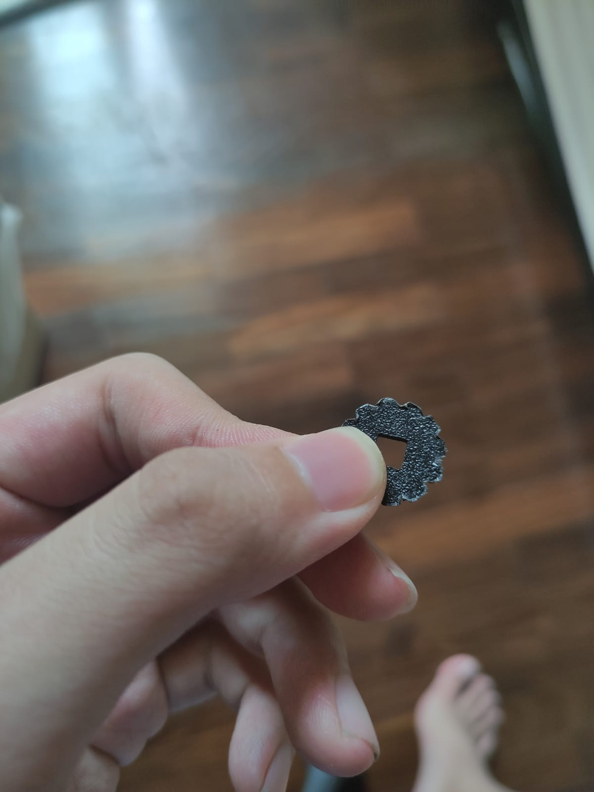
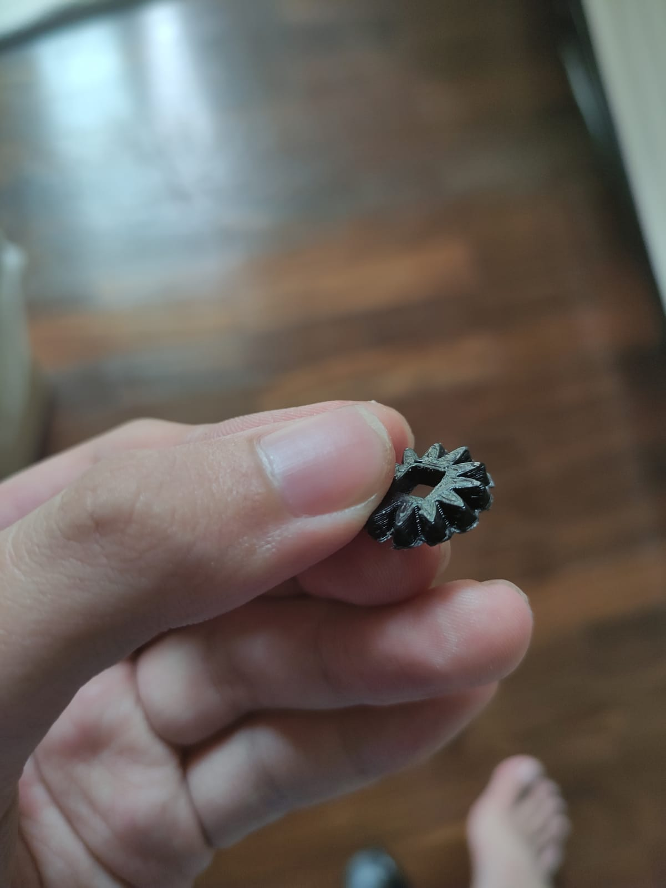

Module Project: Hollow Clock
For the final project for EP10000, I decided to make a hollow clock. This page will go over the process of creating it, and the skills learnt from EP1000 that were utilised.
The stepper motor rotates two sets of gears to allow them to rotate at a specific speed to ensure that one rotation of the minute hand is one hour on the hour hand.
The hour hand is "connected" to the hour gear via magnets.
Upon a few iterations, these are the key numbers that will ensure the clock will function as intended:
• Hour and Minute Gears have 90 teeth.
• The Bevel Gears connecting the motor to the minute hand have 12 teeth.
• Gear Ratio for Minute Hand is 90/12 = 7.5
• Gear Ratio for Hour Hand is 90/1 = 90
• Stepper Motor takes 2048 for a full rotation.
Initially, the plan was to have most of the casing made via 3D printing, and have the larger gears laser cut. This however resulted in some noticeable visual wear on the 3D printed gears after the board was operating.
Therefore, all the gears were 3D printed instead.
I found that while printing the gears, printing with a brim would result in material being stuck between the gears. This would cause the gears to not function properly, and had to be re-designed to have sufficient flat surface to ensure that surface adhesion would be sufficient without a brim. INSERT A PHOTO OF THE FUCKED GEAR
 To control the stepper motor, I opted to use the powerful AccelStepper library that allows for decimal point speed control which is crucial for the accuracy of the clock.
Integer value a is derived from the total number of steps required to rotate the minute gear by one complete revolution divided by the amount of time it should take. Do note that setSpeed runs on seconds.